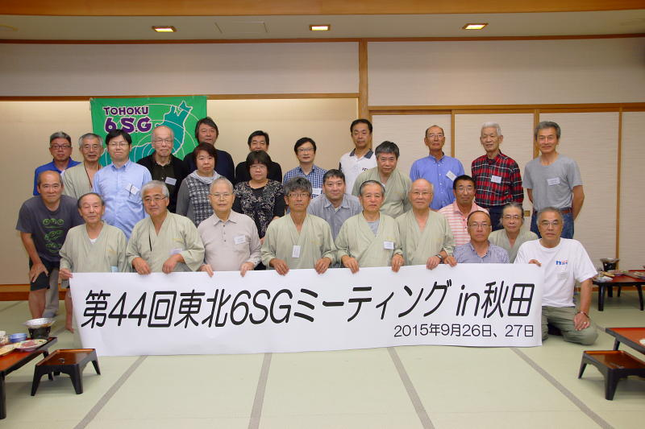

Flash ! DX
|
Who said 6M was a dead band ?
|
(注)
このReportをご覧になる方へ
[Back Issues Sep.2015]
TIME:UTC(JST-09:00)
Report from JA1RJU(PM95sq)
30.Sep.2015(15:00d)
VK4RHT/b 10:00- 50.281.0 CW Beacon RST599 (Good Sig into PM95)
VK4RTL/b 10:00- 50.282.0 CW Beacon RST539
VK8VF/b 10:10- 50.310.0 CW Beacon RST559
VK4TVL/b 10:15- 50.295.0 CW Beacon RST559
VK8VF/b 11:35- 50.310.0 CW Beacon weak now
|
◎今日は久しぶりにVKのBeaconが関東地方でも強力に入感していた。日中のアフタヌーンタイプのTEPによるVKの入感は、相変わらず例年よりも遅れているが、夜間に西日本でオープンしていても緯度の高い東日本では聞こえて居ない日が多く、全くリポートの無い日が続いていた。
ワッチを”サボっている”訳ではないのだが、この夏以降の6mのコンデションがここまで落ち込むとは予想も出来なかった。10月のコンデション上昇を期待したい。
|
Report from JA1RJU(PM95sq)
29.Sep.2015(15:00c)
ES6IQ 19:24 50.198 WSJT JT65a (EME QSO -17dB (Report from JR6EXN)
EI4DQ 20:48 50.227 WSJT JT65a (EME QSO -22dB (Report from JR6EXN)
Report from JA1RJU(PM95sq)
28.Sep.2015(15:00b)
Report from JA1RJU(PM95sq)
27.Sep.2015(15:00c)
◎ 第44回東北6m SSB Group Meeting in 秋田・横手市
VE1JF 09:01 50.195 WSJT JT65a CQ -21dB(EME Report from JR6EXN)
N8JX 09:05 50.192 WSJT JT65a CQ -25dB(EME Report from JR6EXN)
LZ2WO 18:10 50.227 WSJT JT65a (EME QSO -24dB from JR6EXN)
26.Sep.2015(15:00b)
◎ 第44回東北6m SSB Group Meeting in 秋田・横手市



第44回東北6m SSB Group Meeting (写真・JH7JGM)
|
Report from JA1RJU(PM95sq)
25.Sep.2015(15:00c)
S57RR 15:50 50.193 WSJT JT65a CQ (EME Report from JR6EXN)
S59A 16:47 50.226 WSJT JT65a (EME QSO Report from JR6EXN)
Report from JA1RJU(PM95sq)
24.Sep.2015(15:00b)
Report from JA1RJU(PM95sq)
23.Sep.2015(15:00c)
OH2BC 15:55 50.226 WSJT JT65a(EME Report from JR6EXN)
Report from JA1RJU(PM95sq)
22.Sep.2015(15:00b)
Report from JA1RJU(PM95sq)
21.Sep.2015(15:00b)
Report from JA1RJU(PM95sq)
20.Sep.2015(15:00b)
Report from JA1RJU(PM95sq)
19.Sep.2015(15:00b)
Report from JA1RJU(PM95sq)
18.Sep.2015(15:00b)
Report from JA1RJU(PM95sq)
17.Sep.2015(15:00b)
Report from JA1RJU(PM95sq)
16.Sep.2015(15:00b)
Report from JA1RJU(PM95sq)
15.Sep.2015(15:00b)
Report from JA1RJU(PM95sq)
14.Sep.2015(15:00b)
Report from JA1RJU(PM95sq)
13.Sep.2015(15:00b)
Report from JA1RJU(PM95sq)
12.Sep.2015(15:00b)
S57RR 06:32 50.193 WSJT JT65a(EME QSO -23dB from JR6EXN)
Report from JA1RJU(PM95sq)
11.Sep.2015(15:00b)
Report from JA1RJU(PM95sq)
10.Sep.2015(15:00b)
◎中部地方から本州を縦断し、日本海に抜け”温帯低気圧”となった台風18号の影響で茨城、栃木県を中心に豪雨による大きな被害が出た。
台風の東側に沿って北上する”線状降水帯”からの豪雨により、鬼怒川が昼頃に茨城県常総市で80mに渡り堤防が決壊、水害地域は広範囲に広がった。
濁流の中の自宅に取り残された住民300人余は、12機の自衛隊機をはじめ、消防、警察などのヘリコプターで救助されたが、まだ避難先で700人以上が救助を要請している。”大雨特別警報”は栃木、茨城など北関東から、東北地方にかけて現在も続いている。
6mのコンデションは昨日に引き続き不調。
|
Report from JA1RJU(PM95sq)
09.Sep.2015(15:00c)
GW4WND 12:40 50.190 WSJT JT65a(JR6EXN EME QSO=-21dB)
◎父島近海の太平洋上で発生し、北上して本土に向かっていた台風18号は、9日朝に愛知県の知多半島に上陸、中部地方から本州を縦断し、
夕方には日本海に抜け”温帯低気圧”となったが、愛知県や三重県などの各地に豪雨による大きな被害を与えた。
関東地方内陸部では、台風18号の風に寄る直接の影響は無かったが、台風の東側に北上する”線状降水帯”からの豪雨により、
神奈川から栃木県に掛けて猛烈な雨が続き、各地に大きな被害を与えている。この大雨警報は明日まで続く予想。
|
Report from JA1RJU(PM95sq)
08.Sep.2015(15:00b)
Report from JA1RJU(PM95sq)
07.Sep.2015(15:00b)
HL/VK6JJJ 08:59 50.276-0.032 WSJT JT65a CQ -11dB
Report from JA1RJU(PM95sq)
06.Sep.2015(15:00b)
Report from JA1RJU(PM95sq)
05.Sep.2015(15:00c)
VK4RHT 10:49 50.281.0 CW Beacon into JA3 519
VK4RTL 11:13- 50.282.0 CW Beacon into JA3 519
VK8VF 11:15- 50.310.0 CW Beacon into JA3 519
VK8VF 11:27- 50.310.2 CW Beacon into JA6
VK4RHT 11:29- 50.280.9 CW Beacon into JA6
VK4RTL 11:30- 50.282.0 CW Beacon into JA6
Report from JA1RJU(PM95sq)
04.Sep.2015(15:00b)
DU1EV/B 10:00- 50.008 CW Beacon
Report from JA1RJU(PM95sq)
03.Sep.2015(15:00b)
Report from JA1RJU(PM95sq)
02.Sep.2015(15:00c)
ZL3NB 05:21 50.275-0.234 WSJT JT65a "ZL3NB RRR 73"-10dB
Report from JA1RJU(PM95sq)
01.Sep.2015(15:00b)
T88WJ 09:31 50.110 SSB @ RS59 (QSL via JS3LSQ)